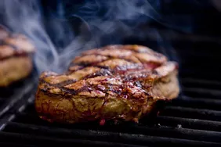

Steak Dry Rub Seasoning
This amazing steak seasoning is made with smoked paprika, oregano, garlic, and cumin. Rub onto any cut of steak and let sit for 15 to 20 minutes before grilling.
Ingredients
- 3 tablespoons kosher salt
- 3 tablespoons smoked paprika
- 2 tablespoons onion powder
- 2 tablespoons garlic powder
- 2 tablespoons dried oregano
- 2 tablespoons coarsely ground black pepper
- 1 tablespoon light brown sugar
- 1 tablespoon ground cumin
Directions
- Gather all ingredients.
- Mix kosher salt, smoked paprika, onion powder, garlic powder, oregano, black pepper, brown sugar, and cumin together in a sealable container. Seal container and shake to mix.
- Season steaks.